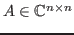
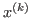
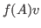
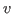
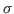
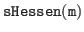

In many computational applications it is required to solve simultaneously shifted linear systems of the form

is a non-Hermitian matrix,
is the unknown vector and
, where
is an arbitrary vector with lengthIn principle, a sequence of shifted linear systems (1) can be solved simultaneously at the cost of a single solve using shifted Krylov subspace methods (abbreviated as KSMs). These methods employ the property that Krylov subspaces are invariant under arbitrary diagonal shifts

to the matrix
However, both the restarted GMRES method and the restarted FOM method for
(1) are inherently derived by the Arnoldi procedure, which
tends to be expensive when  becomes large in aspects of memory and
algorithmic cost. To alleviate these difficulties, our recent work
[5] proposed a new iterative strategy with collinear residuals
for solving sequence of shifted linear systems based on the Hessenberg
process, which is similar but cheaper compared to the Arnoldi procedure.
Our theoretical and numerical analyses indicate that iterative schemes
referred to as
becomes large in aspects of memory and
algorithmic cost. To alleviate these difficulties, our recent work
[5] proposed a new iterative strategy with collinear residuals
for solving sequence of shifted linear systems based on the Hessenberg
process, which is similar but cheaper compared to the Arnoldi procedure.
Our theoretical and numerical analyses indicate that iterative schemes
referred to as

may outperform the conventional shifted FOM method in aspects of iteration counts and CPU time. From the algorithmic property, it turns out that preserving orthonormality in the construction of the Krylov basis is sometimes not necessary for an efficient iterative solution of (1). This observation motivates us to extend the restarted Changing Minimal Residual method based on the Hessenberg process (CMRH) [3], which is similar to the restarted shifted GMRES method but much cheaper, for solving (1).In practice, preconditioning shifted systems (1) is necessary to accelerate the convergence of shifted KSMs and this remains an open question, because standard preconditioning techniques may destroy the shift-invariance property (2). In this work, we construct an inner-outer scheme based on nested KSMs, where the inner solver is a multi-shift KSM (i.e., ) that acts as a preconditioner for an outer flexible CMRH (FCMRH) method. Our numerical experiments show that the new nested iterative scheme based on the Hessenberg procedure is very competitive, and sometimes superior, compared to the early established combination (FOM-FGMRES) in [4] in terms of CPU time. In summary, in our presentation first we discuss the derivations of both the method [5] and the restarted shifted CMRH method. Then, we present their flexible variant combined with nested inner-outer iterative schemes, namely multi-shift Hessen-FCMRH. Meanwhile, extensive numerical experiments involving PageRank problems and numerical solutions of space(-time) fractional differential equations are reported to illustrate the effectiveness of the restarted shifted CMRH method and the Hessen-FCMRH method, respectively.